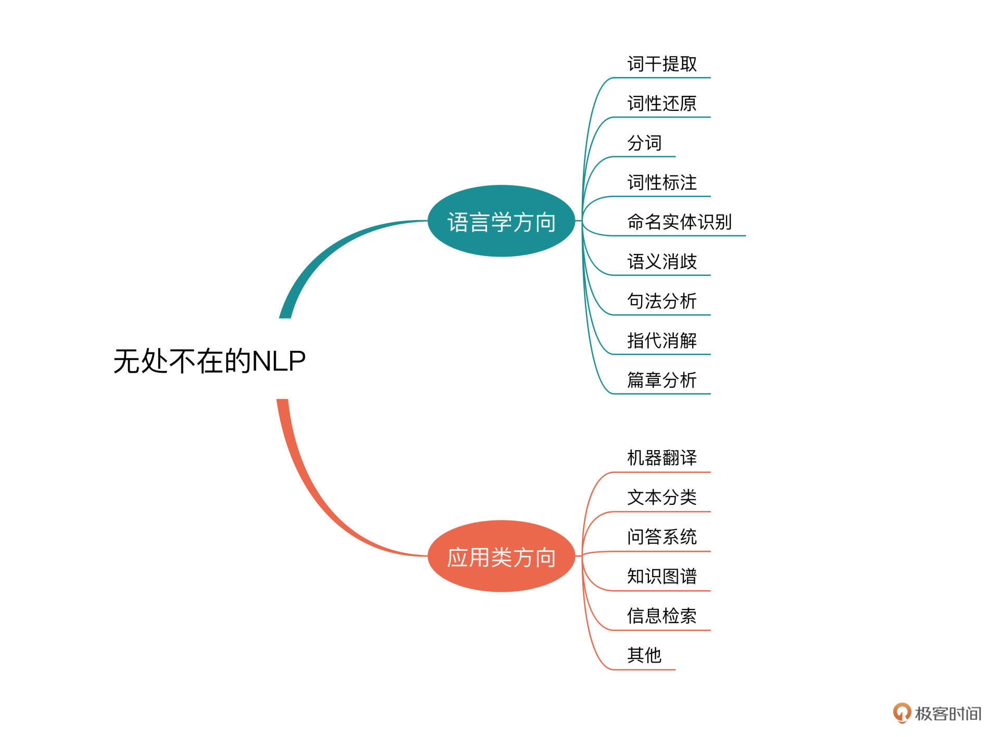
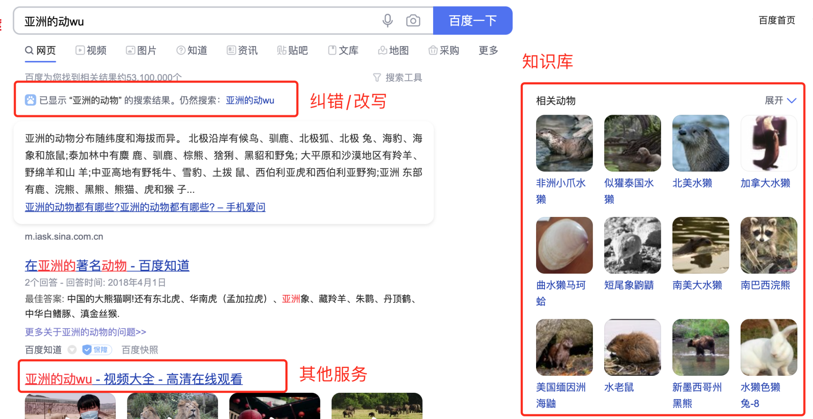
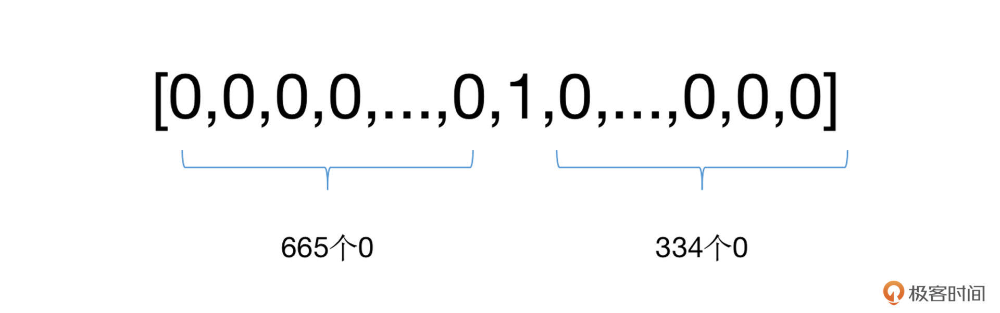
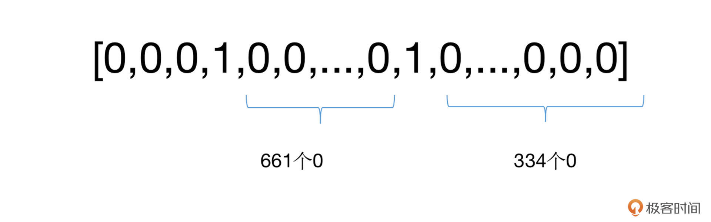
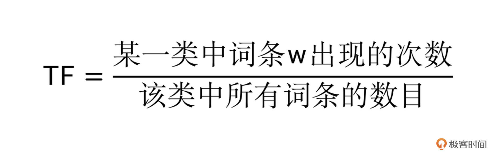
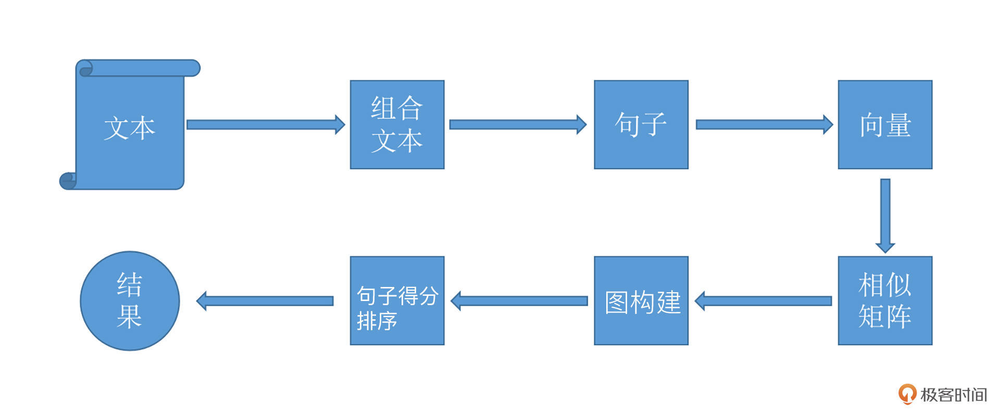

- 00 开篇词 如何高效入门PyTorch？.md.html
- 01 PyTorch：网红中的顶流明星.md.html
- 02 NumPy（上）：核心数据结构详解.md.html
- 03 NumPy（下）：深度学习中的常用操作.md.html
- 04 Tensor：PyTorch中最基础的计算单元.md.html
- 05 Tensor变形记：快速掌握Tensor切分、变形等方法.md.html
- 06 Torchvision（上）：数据读取，训练开始的第一步.md.html
- 07 Torchvision（中）：数据增强，让数据更加多样性.md.html
- 08 Torchvision（下）：其他有趣的功能.md.html
- 09 卷积（上）：如何用卷积为计算机“开天眼”？.md.html
- 10 卷积（下）：如何用卷积为计算机“开天眼”？.md.html
- 11 损失函数：如何帮助模型学会“自省”？.md.html
- 12 计算梯度：网络的前向与反向传播.md.html
- 13 优化方法：更新模型参数的方法.md.html
- 14 构建网络：一站式实现模型搭建与训练.md.html
- 15 可视化工具：如何实现训练的可视化监控？.md.html
- 16 分布式训练：如何加速你的模型训练？.md.html
- 17 图像分类（上）：图像分类原理与图像分类模型.md.html
- 18 图像分类（下）：如何构建一个图像分类模型_.md.html
- 19 图像分割（上）：详解图像分割原理与图像分割模型.md.html
- 20 图像分割（下）：如何构建一个图像分割模型？.md.html
- 21 NLP基础（上）：详解自然语言处理原理与常用算法.md.html
- 22 NLP基础（下）：详解语言模型与注意力机制.md.html
- 23 情感分析：如何使用LSTM进行情感分析？.md.html
- 24 文本分类：如何使用BERT构建文本分类模型？.md.html
- 25 摘要：如何快速实现自动文摘生成？.md.html
- 加餐 机器学习其实就那么几件事.md.html
- 用户故事 Tango：师傅领进门，修行在个人.md.html
- 答疑篇 思考题答案集锦.md.html
- 结束语 人生充满选择，选择与努力同样重要.md.html
- 捐赠
21 NLP基础（上）：详解自然语言处理原理与常用算法
你好，我是方远。
在之前的课程中，我们一同学习了图像分类、图像分割的相关方法，还通过实战项目小试牛刀，学完这部分内容，相信你已经对深度学习图像算法有了一个较为深入的理解。
然而在实际的项目中，除了图像算法，还有一个大的问题类型，就是文字或者说语言相关的算法。这一类让程序理解人类语言表达的算法或处理方法，我们统称为自然语言处理（Natural Language Processing, NLP）。
这节课，我们先来学习自然语言处理的原理和常用算法，通过这一部分的学习，以后你遇到一些常见的NLP问题，很容易就能想出自己的解决办法。不必担心原理、算法的内容太过理论化，我会结合自己的经验从实际应用的角度，为你建立对NLP的整体认知。
NLP的应用无处不在
NLP研究的领域非常广泛，凡是跟语言学有关的内容都属于NLP的范畴。一般来说，较为多见的语言学的方向包括：词干提取、词形还原、分词、词性标注、命名实体识别、语义消歧、句法分析、指代消解、篇章分析等方面。
看到这里，你可能感觉这些似乎有点太学术、太专业了，涉及语言的结构、构成甚至是性质方面的研究了。没错，这些都是NLP研究在语言学中的应用方面，就会给人一种比较偏研究的感觉。
实际上，NLP还有很多的研究内容是侧重“处理”和“应用”方面的，比如我们常见的就有：机器翻译、文本分类、问答系统、知识图谱、信息检索等等。

我举一个例子，你就知道自然语言处理有多么重要了。平时我们经常会用搜索引擎，当你打开网页、在搜索框中输入自己想要了解的关键词之后，搜索引擎的后台算法逻辑就要开始一整套非常复杂的算法逻辑，这其中包括几个比较重要的方面，我们不妨结合例子来看看。
在搜索引擎的输入框中，输入“亚洲的动wu”文本，显示的内容如下图所示。别看只是一次简单的检索动作，搜索系统要完成的工作可不少。

首先，搜索引擎要对你输入的内容（query）进行解析，这就涉及到了之前提到的分词、命名实体识别、语义消歧等内容，当然还涉及到了query纠错，因为你错误地输入了拼音而非汉字，需要改写成正确的形式。
通过一系列的算法之后，系统识别出你的需求是：寻找动物相关的搜索结果，这些结果的限定条件是它们要生活在亚洲。
接着，系统就开始在数据库（或者是存储的集群中）搜索相关的实体，这些实体的查询和限制条件的过滤，就涉及信息检索、知识图谱等内容。
最后，细心的同学对照搜索结果会发现，有的时候搜索引擎除了提供严格匹配的检索结果之外，还会提供一些相关内容的扩展结果，比如广告、新闻、视频等。而且很多搜索引擎的扩展搜索结果页都是个性化的，也就是根据用户的特点行为提供推荐，这些让我们的搜索结果更加丰富，体验更好。
仅仅只有这些了么？不，远远没有，因为刚才的这个过程，只是针对你这一个用户的一次检索所需要完成的一部分工作而已。更多的工作，实际是用户开始使用搜索引擎之前的构建准备阶段。
为了构建搜索引擎，就需要对存储的内容进行解析，这就包括了篇章理解、文本处理、图片识别、音视频算法等环节，对每一个网页（内容）进行特征的提取，构建检索库、知识库等，这个工作量就会非常的大，涉及的面也非常广泛。
由此可见，NLP的应用真的深入到了互联网业务的方方面面，掌握了NLP的相关算法将会使我们的竞争力变得更强。接下来，针对自然语言处理的“应用”方面，我们一起聊聊NLP中文场景下的一些重要内容。
NLP的几个重要内容
想要让程序对文本内容进行理解，我们需要解决几个非常基础和重要的内容，分别是分词、文本表示以及关键词提取。
分词
中文跟英文最大的不同在于，英文是由一个个单词构成的，单词与单词之间有空格隔断。但是中文不一样，中文单词和单词之间除了标点符号没有别的隔断。这就给程序理解文本带来了一定的难度，分词的需求也应运而生。
尽管现在的深度学习已经对分词的依赖越来越小，可以通过Word Embedding等方式对字符（token）级的文字进行表示，但是分词的地位不会降低，单词、词组级别的文本表示仍旧有非常多的应用场景。
因为我们的学习重在快速上手和实战应用，所以为了降低你的学习成本，这个专栏里我不会专门深入讲解各种分词算法细节，而是侧重于带你理解其特点，并教你学习如何用相应的工具包实现分词过程。
目前网络上已经有了很多的开源或者免费的NLP分词工具，比如jieba、HanLP、THULAC等，包括腾讯、百度、阿里等公司也有相应的商业付费工具。
贫穷使人理智，我们今天使用免费的jieba分词来做一个分词的例子，链接你可以从这里获取。安装这个工具非常简单，只需要使用pip即可。
pip install jieba
jieba的使用也很方便，我来演示一下：
import jieba
text = "极客时间棒呆啦"
# jieba.cut得到的是generator形式的结果
seg = jieba.cut(text)
print(' '.join(seg))
# Get： 极客 时间 棒呆 啦
其实除了分词，jieba还提供了词性标注的结果（pos）：
import jieba.posseg as posseg
text = "一天不看极客时间我就浑身难受"
# 形如pair('word, 'pos')的结果
seg = posseg.cut(text)
print([se for se in seg])
# Get [pair('一天', 'm'), pair('不', 'd'), pair('看', 'v'), pair('极客', 'n'), pair('时间', 'n'), pair('我', 'r'), pair('就', 'd'), pair('浑身', 'n'), pair('难受', 'v')]
是不是非常简单？搞定了分词，我们接下来就要开始对文本进行表示了。
文本表示的方法
在深度学习被广泛采用之前，很多传统机器学习算法结合自身的特点，使用了各种各样的文本表示。
最经典的就是独热（One-hot）表示法了。在这种方法中，假定所有的文字一共有N个单词（也可以是字符），我们可以将每个单词赋予一个单独的序号id，那么对于任意一个单词，我们都可以采用一个N位的列表（向量）对其进行表示。在这个表示中，只需要将这个单词对应序号id的位置为1，其他位置为0即可。
我还是举个例子来帮你加深理解。比方说，我们词典大小为10000，“极客”这个单词的序号id为666，那么我们就需要建立一个10000长度的向量，并将其中的第666位置为1，其余位为0。如下：

这时候你就会发现，在UTF-8编码中，中文字符有两万多个，词语数量更是天文数字，那么我们仅用字符的方式，每个字就需要两万多维度的数据来表示。推算一下，如果有一篇一万字的文章，这个数据量就很可怕了。
为了进一步的压缩数据的体积，可以只使用一个向量表示文章中所有的单词，例如前面的例子，我们仍旧建立一个10000维的向量，把文章中出现过的所有单词的对应位置置为1，其余为0。

这样看上去，数据体积就少了很多，还有没有其他办法进一步缩减空间的占用呢？有的，例如count-based表示方法。
在这种方法中，我们采用v={index1: count1, index2: count2,…, index n: count n}的形式，对每一个出现的单词的序号id以及出现过的次数进行统计，这样一来，“极客时间”我们只需要两个k-v对的dict即可表示: {3:1, 665:1}。
这种表示方法在SVM、树模型等多个算法包中被广泛采用，因为客观来说，它确实能够大幅度地压缩空间的占用，生成起来也非常方便。但是你会发现前面这几种方法，不能表述单词的语序信息。
举个例子，“我/喜欢/你”和“你/喜欢/我”两个截然不同的意思，用前面的方法做分词的话，却会得到相同的表示结果。这时候如果搞错了，其实却是单相思的话，那岂不是很苦涩？
好在现在深度学习的使用推动了Word Embedding的发展，基本上我们都会采用该方法进行文本表示。但是还是刚才的话，这并不意味着传统的文本表示方法就过时了。在一些小规模、轻量级的文本处理场景中，它们的作用仍旧非常大。
关于文本表示中Word Embedding的部分，咱们在后续课程再展开讲解，这也是NLP深度学习的核心内容之一。
让我们回到刚才的传统文本表示方法，为了实现对单词顺序信息的记录，该怎么办呢？这时我们要解决NLP中的一个重要问题：关键词的提取。
关键词的提取
关键词，顾名思义，就是能够表达文本中心内容的词语。关键词提取在检索系统、推荐系统等应用中有着极重要的地位。它是文本数据挖掘领域的一个分支，所以在摘要生成、文本分类/聚类等领域中也是非常基础的环节。
关键词提取，主要分为有监督和无监督的方法，一般来说，我们采用无监督的方法较多一些，这是因为它不需要人工标注的语料，只需要对文本中的单词按照位置、频率、依存关系等信息进行判断，就可以实现关键词的识别和提取。
无监督方法一般有三种类型，基于统计特征的方法、基于词图模型的方法，以及基于主题模型的方法，我们分别来看看。
基于统计特征的方法
这种类型的方法最为经典的就是TF-IDF（term frequency–inverse document frequency，词频-逆向文件频率）。该方法最核心的思想非常简单：一个单词在文件中出现的次数越多，它的重要性越高；但它在语料库中出现的频率越高，它的重要性反而越小。
什么意思呢？就比如说我们有10篇文章，其中有2篇财经文章、5篇科技、3篇娱乐，对于单词“股票”，它在财经文章中的次数肯定非常多，但是在娱乐和科技中就非常少，这就意味着“股票”这个词就能够更好的“区分”文章的类别，那它的重要性自然也就非常高了。
在TF-IDF中，词频（TF）表示关键字在文本中出现的频率。而逆向文件频率 (IDF) 是由包含该词语的文件的数目除以总文件数目得到的，一般情况下还会取对数对结果进行缩放。
-

你可以自己先想想，这里为什么分母要加1呢？这是为了避免分母为0的情况。得到了TF和IDF之后，我们将两者相乘，就得到了TF-IDF了。
通过TF-IDF不难看出，基于统计的方法的特点在于，对单词出现的次数以及分布进行数学上的统计，从而发现相应的规律和重要性（权重），并以此作为关键词提取的依据。
跟分词一样，关键词的提取目前也有很多集成工具包，比如NLTK（Natural Language Toolkit），它是一个非常著名的自然语言处理工具包，是NLP研究领域常用的Python库。我们仍旧可以使用pip install nltk命令来进行安装。
使用NLTK来计算TF-IDF非常简单，代码如下：
from nltk import word_tokenize
from nltk import TextCollection
sents=['i like jike','i want to eat apple','i like lady gaga']
# 首先进行分词
sents=[word_tokenize(sent) for sent in sents]
# 构建语料库
corpus=TextCollection(sents)
# 计算TF
tf=corpus.tf('one',corpus)
# 计算IDF
idf=corpus.idf('one')
# 计算任意一个单词的TF-IDF
tf_idf=corpus.tf_idf('one',corpus)
你可以执行前面这段代码，看看tf_idf等于多少？
基于词图模型的关键词提取
前面基于统计的方法采用的是对词语的频率计算的方式，但我们还可以有其他的提取思路，那就是基于词图模型的关键词提取。
在这种方法中，我们首先要构建文本一个图结构，用来表示语言的词语网络。然后对语言进行网络图分析，在这个图上寻找具有重要作用的词或者短语，即关键词。
该类方法中最经典的就是TextRank算法了，它脱胎于更为经典的网页排序算法PageRank。关于PageRank算法，你可以参考这个wiki（戳我）。戳完PageRank之后，你就会知道，PageRank算法的核心内容有两点：
如果一个网页被很多其他网页链接到的话，就说明这个网页比较重要，也就是PageRank值会相对较高。
如果一个PageRank值很高的网页，链接到一个其他的网页，那么被链接到的网页的PageRank值会相应地因此而提高。- 而TextRank就非常好理解了。它跟PageRank的区别在于：
用句子代替网页
任意两个句子的相似性可以采用类似网页转换概率的概念计算，但是也稍有不同，TextRank用归一化的句子相似度代替了PageRank中相等的转移概率，所以在TextRank中，所有节点的转移概率不会完全相等。
利用矩阵存储相似性的得分，类似于PageRank的矩阵M。
TextRank的基本流程如下图所示。

看上去蛮复杂的，不过没有关系，刚才提到的jieba也有了相应的集成算法。在jieba中，我们可以使用如下的函数进行提取：
jieba.analyse.textrank(sentence, topK=20, withWeight=False, allowPOS=('ns', 'n', 'vn', 'v'), withFlag=False)
其中sentence是待处理的文本，topK是选择最重要的K个关键词，基本上你用好这两个参数就足够了。
基于主题模型的关键词提取
最后一种关键词提取方法就是基于主题模型的关键词提取。
主题模型，这个名字看起来就高端了很多，实际上它也是一种基于统计的模型，只不过它会“发现”文档集合中出现的抽象的“主题”，并用于挖掘文本中隐藏的语义结构。
LDA（Latent Dirichlet Allocation）文档主题生成模型，是最典型的基于主题模型的算法。有关LDA的算法的介绍，你随便搜索一下网络资料就能找到，我就不展开说了。而咱们在这节课中，将会利用已经集成好的工具包gensim来实现使用这个模型，代码也非常简单，我们一起来看一下：
from gensim import corpora, models
import jieba.posseg as jp
import jieba
input_content = [line.strip() for line in open ('input.txt', 'r')]
# 老规矩，先分词
words_list = []
for text in input_content:
words = [w.word for w in jp.cut(text)]
words_list.append(words)
# 构建文本统计信息, 遍历所有的文本，为每个不重复的单词分配序列id，同时收集该单词出现的次数
dictionary = corpora.Dictionary(words_list)
# 构建语料，将dictionary转化为一个词袋。
# corpus是一个向量的列表，向量的个数就是文档数。你可以输出看一下它内部的结构是怎样的。
corpus = [dictionary.doc2bow(words) for words in words_list]
# 开始训练LDA模型
lda_model = models.ldamodel.LdaModel(corpus=corpus, num_topics=8, id2word=dictionary, passes=10)
在训练环节中，num_topics代表生成的主题的个数。id2word即为dictionary，它把id都映射成为字符串。passes相当于深度学习中的epoch，表示模型遍历语料库的次数。
小结
在这节课中，我带你一同了解了自然语言处理的应用场景以及三个经典的NLP基础问题。
NLP的三大经典问题包括分词、文本表示、关键词提取，正是因为这三个问题太过经典和基础，所以现在已经有了大量的集成工具供我们直接使用。
但我还是那句话，有了工具，并不意味着我们不需要理解它内部的原理，学习要知其然，更需要知其所以然，这样在实际的工作中遇到问题的时候，我们才能游刃有余地解决。
细心的你可能已经发现了，今天的课程里我们针对不同的问题使用了不同的工具包，分词我们使用了jieba，关键词的提取我们使用了gensim和NLTK，所以我希望你在课后有空的时候，也去了解一下这三个工具的具体使用和更多功能，因为它们真的很强大。
在文本表示方法中，我们留了一个小尾巴，也就是Word Embedding。随着深度学习的越来越广泛使用，词嵌入（Word Embedding）的方法也有了越来越多的算法和工具来实现。在后续的课程中，我会通过BERT的实战开发来向你介绍Word Embedding的训练生成和使用。
每课一练
TF-IDF有哪些缺点呢？你不妨结合它的计算过程做个梳理。
期待你在留言区跟我交流互动，也推荐你把这节课分享给身边对NLP感兴趣的同事、朋友，跟他一起学习进步。
© 2019 - 2023 Liangliang Lee. Powered by gin and hexo-theme-book.